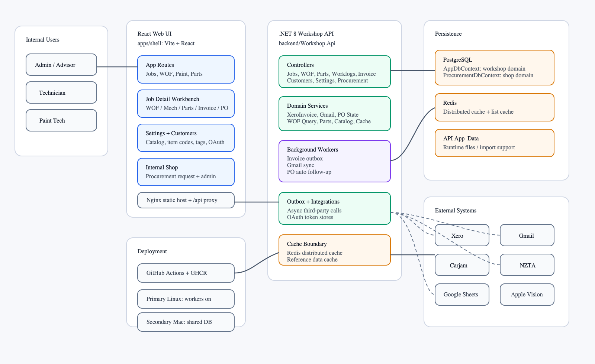
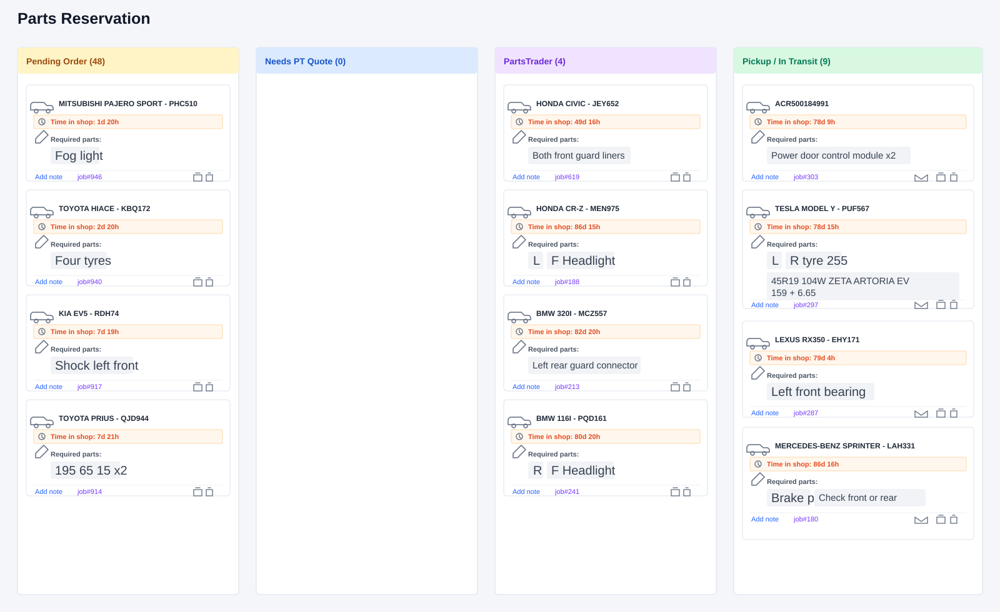
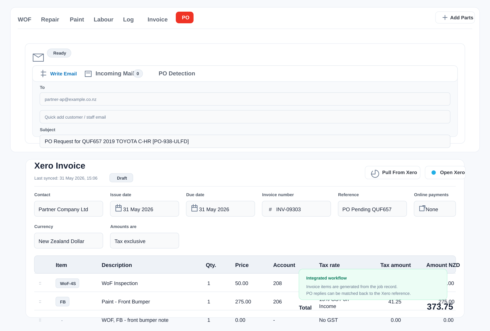
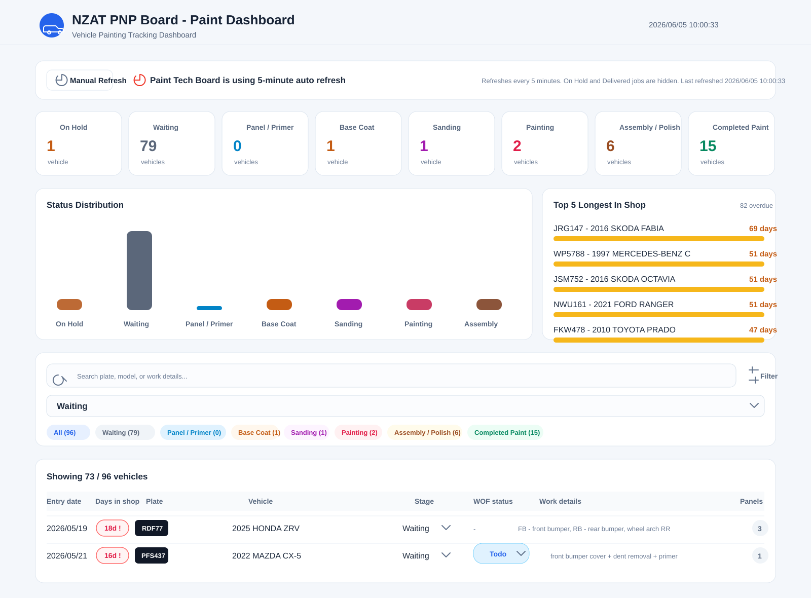

System Overview
This project is best understood as a real workflow system, not a standalone CRUD application. Its core challenge was turning Excel-dependent workshop operations into traceable digital workflows without ignoring the people, habits, and business constraints already inside the company.
Problem
NZAT relied on Excel, paper job sheets, manual emails, and separated repair records. This made job status, WOF details, budgets, insurance information, and follow-up work difficult to track consistently.
Approach
I helped build a React, TypeScript, ASP.NET Core, and PostgreSQL platform that connects vehicles, customers, jobs, WOF records, budgets, email, Xero, and management reporting into one operational flow.
Result
The system turns scattered manual management into a more visual and automated workflow, helping the business organise repair work, standardise daily processes, and track operational status more clearly.
The hardest part was not building forms or dashboards. It was deciding which parts of the existing workflow should be automated immediately, and which parts should remain familiar enough for the team to adopt safely.
Technology Stack
The stack was chosen to support a practical internal business application: a typed frontend, a structured .NET API, relational data modelling, and deployment practices that can evolve from the existing Linux server toward Azure when the business is ready.
Technology Stack
Architecture Picture

Feature Deep Dive
The strongest story in this project is the movement from scattered operational activity to structured software workflows. Each feature was designed around a business pain, not only around a screen.
Order Part Flow
Parts ordering became a workflow problem, not only a purchasing task. Different vehicles needed different parts, suppliers were not always the same, and the path from finding a part to quoting the customer, reserving it, receiving it, and booking the repair could stretch across several days.
- Pain: Notes were too easy to miss when staff had to track sourcing, supplier options, quotes, reservations, delivery, sign-off, and customer repair updates manually.
- Solution: The Order Part workflow gives every request a clear status, so staff can move each vehicle through ordering, PartsTrader quoting, pickup or transit, and follow-up actions.
- Result: Part orders became visual and trackable, with standardised order statuses that make delays, blockers, and next steps easier to see.

Email and Xero Integration
After a job is completed, Business customers often need to create a purchase order before payment can move forward. Before the system, staff manually created Xero invoices for each job, emailed invoice details as attachments, waited for a PO reply, then searched for the matching invoice again to update the PO number as the reference.
- Pain: The payment workflow depended on manual checking across Xero and email, with staff switching windows to create invoices, verify job details, monitor replies, and match PO numbers back to the right record.
- Solution: The system integrates Xero invoice APIs with the job workflow, automatically building invoice line items from repair work and sending PO request emails when an invoice is ready.
- Result: A multi-window manual process became one integrated workflow, giving staff one place to review invoice data, request PO numbers, track replies, and keep the Xero reference aligned.

PNP Dashboard
The PNP dashboard is a real-time vehicle painting progress board for the paint technician team. It helps technicians see each vehicle's current paint stage, days in the workshop, overdue risk, and WOF status, while also allowing them to update painting stages and WOF Todo or Checked states directly.
- Pain: Paint shop job status was scattered and not always updated in time, making it hard for technicians to know which vehicles were waiting, in panel and primer, sanding, painting, assembly, or completed paint.
- Solution: The page centralises paint jobs into a full-screen Kanban and table board with five-minute auto refresh, manual refresh, stage summary cards, distribution charts, Top 5 longest vehicles in shop, search, stage filters, pagination, and inline stage updates.
- Result: The workshop can see painting capacity and bottlenecks in real time, quickly identify vehicles stuck for more than three days, reduce verbal follow-ups, and keep paint progress better aligned with WOF scheduling.

Reflection
Current lesson
Real-world workflow software needs careful modelling before feature expansion. The hard part is not only building forms and tables, but deciding how business status, user action, and system records should relate to each other.
Trade-off
Some data could theoretically communicate with the system directly, but stakeholders preferred Excel as a preprocessing layer because several senior staff members were already comfortable with it. This taught me that adoption cost is an engineering constraint too.
Next iteration
The next iteration would focus on insurance claim preparation: AI-assisted image resizing, repair description generation from uploaded photos, and insurer-specific report formats for different claim requirements.
The current deployment uses the company’s existing Linux server because it had already been purchased for a one-year period. Once that sunk cost ends, moving to Azure could support pay-as-you-go infrastructure, lower maintenance overhead, and scale more flexibly with actual usage.
Personal Takeaway
This project taught me that full-stack engineering is not just connecting frontend, backend, and database. It is connecting software decisions with real business workflows, user habits, and long-term operational cost.
Full-stack delivery
I practised working across React, TypeScript, ASP.NET Core, PostgreSQL, API design, testing, and deployment while keeping the product goal visible.
Business workflow thinking
I learned to translate messy real-world operations into clearer digital workflows that support traceability and practical day-to-day use.
Integration awareness
I saw how useful internal systems often depend on external tools, existing Excel processes, reliable APIs, and clear data ownership.
Reflective growth
I can identify trade-offs, explain why a design choice was made, and use reflection to guide the next iteration instead of treating a project as finished after the first working version.